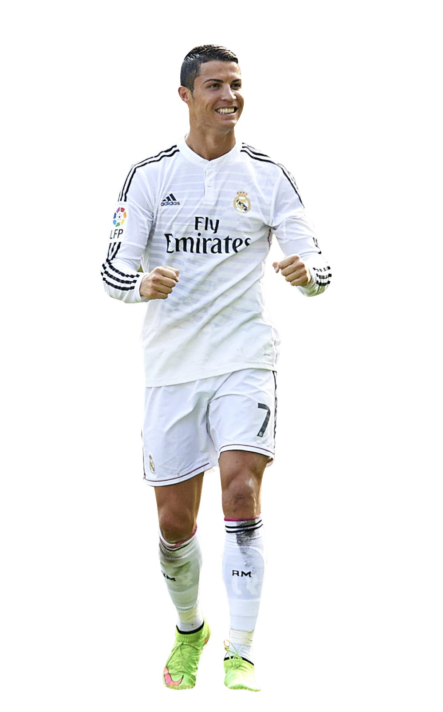

Cristiano Ronaldo dos Santos Aveiro föddes den 5 februari 1985 i Funchal på Madeira, Portugal. Han är en av tidernas största fotbollsspelare och är känd för sin målskicklighet, snabbhet och imponerande fysik. Ronaldo började sin professionella karriär i Sporting CP innan han som tonåring värvades till Manchester United 2003. Där utvecklades han snabbt till en världsstjärna och vann bland annat Champions League 2008.
År 2009 gick han till Real Madrid för en rekordsumma, och där blev han klubbens bästa målskytt genom tiderna med otaliga titlar, inklusive fyra Champions League-segrar. Efter en framgångsrik period i Spanien spelade han även i Juventus, innan han återvände en kort tid till Manchester United. Sedan 2022 spelar han i den saudiarabiska klubben Al Nassr.
Ronaldo har också haft en lysande landslagskarriär. Han ledde Portugal till segern i EM 2016 och i Nations League 2019, och han är både landslagets och världsfotbollens främste målskytt genom tiderna. Under sin karriär har han vunnit fem Ballon d’Or och etablerat sig som en ikon inom sporten.
